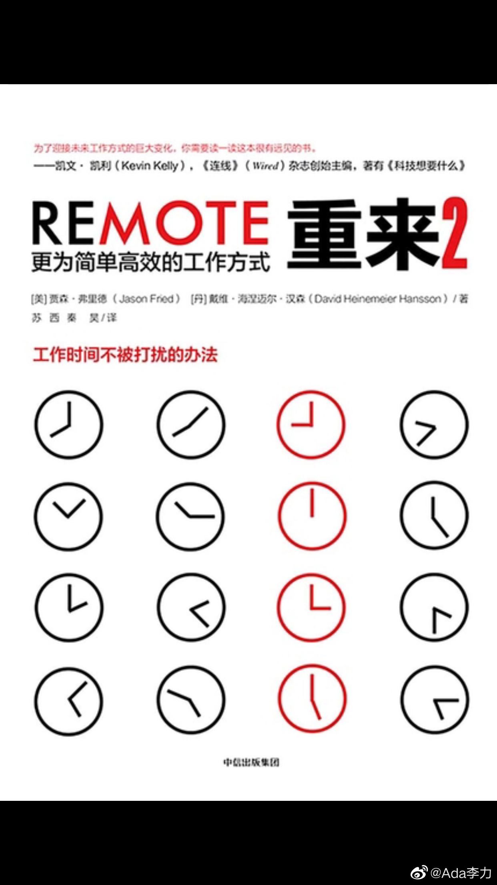

#创业#
以前在IT行业里, 看过37signal的《rework》, 当时就是觉得书里的那些观点太理想化了，而且也很小众, 适用范围不是太广。我那个时候喜欢看的商业书籍还都是《基业常青》《哈佛商业评论》这类，觉得这类书说的才是正道。
但昨天快速的把这两本书翻了下，发现之前根本没读出它的好。我原来是把这本书当方法论来看的，觉得很多方法不实用，比如远程工作，比如给员工充分的信任。但现在重新读，会发现作者其实是在讲自己的人生观，你采用什么样的方法论，其实是由你的人生观决定的。
目前流行的管理方式，其实是有个前提预设：就是人都是不喜欢工作的，员工只有在监督下，才会好好干活。所以会有复杂的各种管理措施，以及各种监控设备。但37siganal认为很多员工是能够把工作当做乐趣的，如果出现了拖延或者士气低下，并不是员工出了问题，而是这工作本身就让人感到乏味的缘故。还有采用远程工作方式，很多管理者会担心员工偷懒，37signal倒认为远程工作的很多员工容易过劳，所以更要坚持每周只工作40个小时，管理者更要关心的是，让远程工作的员工会合理休息。
是否相信这些，对我来说也是一个挑战。但我觉得值得一试，因为这种信任是存在的，即使很稀少，它也是存在的，你只是需要多花些精力，把值得信任的人挑出来，然后呵护好这种信任。
以前在IT行业里, 看过37signal的《rework》, 当时就是觉得书里的那些观点太理想化了，而且也很小众, 适用范围不是太广。我那个时候喜欢看的商业书籍还都是《基业常青》《哈佛商业评论》这类，觉得这类书说的才是正道。
但昨天快速的把这两本书翻了下，发现之前根本没读出它的好。我原来是把这本书当方法论来看的，觉得很多方法不实用，比如远程工作，比如给员工充分的信任。但现在重新读，会发现作者其实是在讲自己的人生观，你采用什么样的方法论，其实是由你的人生观决定的。
目前流行的管理方式，其实是有个前提预设：就是人都是不喜欢工作的，员工只有在监督下，才会好好干活。所以会有复杂的各种管理措施，以及各种监控设备。但37siganal认为很多员工是能够把工作当做乐趣的，如果出现了拖延或者士气低下，并不是员工出了问题，而是这工作本身就让人感到乏味的缘故。还有采用远程工作方式，很多管理者会担心员工偷懒，37signal倒认为远程工作的很多员工容易过劳，所以更要坚持每周只工作40个小时，管理者更要关心的是，让远程工作的员工会合理休息。
是否相信这些，对我来说也是一个挑战。但我觉得值得一试，因为这种信任是存在的，即使很稀少，它也是存在的，你只是需要多花些精力，把值得信任的人挑出来，然后呵护好这种信任。

- 